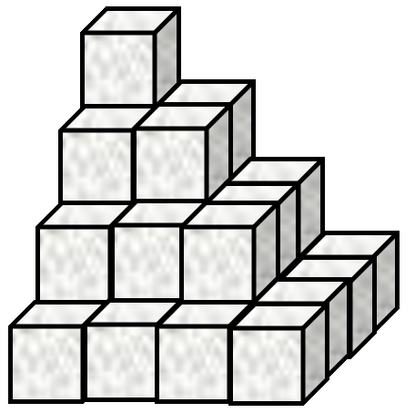
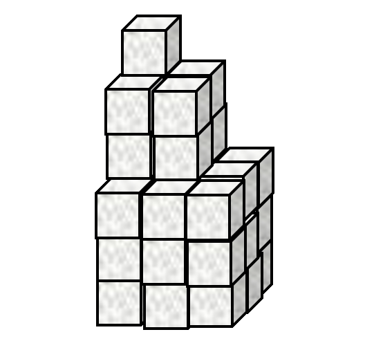

Basic syntax
Functions and arguments
APL has two-argument, infix functions. These are called dyadic functions.
3 × 515 3 - 5¯2Some functions map between elements of their left and right argument arrays. It is easy to add lists of numbers together:
1 2 3 + 4 5 65 7 9Negative numbers are written with a high minus ¯ to differentiate between negation (-3) and literal negative numbers (¯3).
1 2 3 - 1 0 ¯10 2 4There are also one-argument, prefix functions. These are called monadic functions.
- 5 ¯3 0 ¯4 2¯5 3 0 4 ¯2 ⌽ 1 2 3 4 55 4 3 2 1Some symbols represent both a monadic and a dyadic function, but these are often closely related. As we will see later, even user-defined functions can be monadic, dyadic or even both (ambivalent).
Singleton extension
Dyadic functions can map between a single value and an array of values.
3 × 1 10 1003 30 300 3 = 1 2 3 4 50 0 1 0 0Try this: replace the functions in the previous two expressions with:
- max
⍺⌈⍵ - min
⍺⌊⍵ - less-than
<
While experimenting, you may cause a LENGTH ERROR:
1 2+3 4 5LENGTH ERROR: Mismatched left and right argument shapes
1 2+3 4 5
∧Functions such as + × ⌈ apply between elements of two arrays of the same shape, or between one element and many if one of the arguments is a single value. However, if the arrays are of two different shapes, it is not clear how the function should be applied. Of course, you may want to apply a function between all combinations of elements of the left and right argument, but that will be addressed soon enough.
Order of execution
Expressions are executed from right to left.
10×⍳2+510 20 30 40 50 60 70Show me step-by-step
To start, there is a literal number 5:
5
5Next, there is a plus + with a number 2 to its immediate left, so it is evaluated as two plus five:
2+5
7Then the symbol iota ⍳. To its left is another function, times ×, not a value. So the function is called monadically. The monadic form of ⍳ is the index generator, which generates an integer array of length defined by its right argument.
⍳2+5
1 2 3 4 5 6 7Lastly, another dyadic function, we multiply our list by ten:
10×⍳2+5
10 20 30 40 50 60 70The expresssion above is "ten times the indices from 1 to two plus five, or in short: "ten times iota two plus five". We can make it clearer using (superfluous) parentheses ().
10×(⍳(2+5))10 20 30 40 50 60 70Of course, we can change the order of execution using different parentheses.
(10×⍳2)+516 17Show me step-by-step
Beginning from the right, there is a literal number 5:
(10+⍳2)+5
5Then there is a plus symbol +. Before we can decide if it is being called monadically or dyadically, we must look to the left.
)+5A right parenthesis. We must evaluate the contents of the parentheses to see if it is a function or a value.
(10+⍳2)This expression evaluates to the list 11 12. Since it is a value, it is used as the left argument to our plus function.
(10+⍳2)+5
(11 12)+5
16 17Infix (dyadic) functions have a short left scope and long right scope. This means that they take the result of everything to their right hand side as their right argument.
If there is one, the left argument is the value to the immediate left.
However, juxtaposed values form lists before any functions are applied. This is called stranding and lets us write very natural expressions, such as:
1 2 3 + 4 5 6
5 7 9but this can lead to some surprises if we are not aware:
2 + 2 2 + 26 6Show me step-by-step
First, there is a literal number 2
2
2Then there is a symbol +. What, if any, is the value to its immediate left?
2 2 + 2It is a 2-element vector 2 2. The plus function maps between these elements and the single number on the right:
2 2 + 2
4 4Finally there is another addition. The overall evaluation looks like the following:
2 + 2 2 + 2
2 + 4 4
6 6The reduction operator
Adding a list of numbers could become very tedious...
1+2+3+4+5+6+7+8+9+10+11+12+13+14+15120The reduce operator F/ inserts the function F to its left between parts of the right argument array.
+/1 2 3 4 5 6 7 8 9 10 11 12 13 14 15120It is called reduce because it reduces the number of dimensions of its argument. In the example above, we have a vector (1 dimensional, list) argument and return a scalar (0 dimensional, single value) result.
The index generator
The index generator ⍳⍵ generates integers up to the integer right argument ⍵
⍳101 2 3 4 5 6 7 8 9 10So we can do an arithmetic sum as follows
| Traditional Mathematical Notation (TMN) | APL |
| \(\sum_{n=1}^N n\) | +/⍳N |
What do these errors mean?
While experimenting, you are very likely to come across these:
⍳¯4DOMAIN ERROR
⍳¯4
∧The DOMAIN ERROR means that APL cannot compute what you are asking for. In this case, it cannot generate indices up to a negative number. Negative numbers are outside the domain of the index generator function. How might you generate numbers up to negative four?
1+
SYNTAX ERROR: Missing right argument
1+
∧A SYNTAX ERROR means that the expression which you tried to execute does not make sense. In the case above, it is because functions always either take a single argument to their right or two arguments, one to the right and one to the left. Functions never take a single argument to their left.
a
VALUE ERROR: Undefined name: a
a
∧A VALUE ERROR means that there is nothing associated with the name provided. We have not seen any named functions or variables yet; nothing has been assigned to the name a, so trying to use it in an expression is meaningless.
Problem Set 1
-
The average daily temperatures, in degrees Celcius, for 7 days are stored in a variable
t_allweek.t_allweek ← 11.7 8.6 9.7 14.2 6.7 11.8 9.2Use APL to compute the follwing:
- The highest daily temperature
- The lowest daily temperature
- The range of (difference between the largest and the smallest) numbers in
nums - Each temperature rounded to the nearest whole number
Answers
-
⌈/t_allweek 14.2 -
⌊/t_allweek 6.7 -
(⌈/t_allweek)-⌊/t_allweek 7.5You may have found the correct answer using the following expression:
⌈/t_allweek-⌊/t_allweek 7.5but this is less efficient because it does more subtractions than it needs to. Recall the right-to-left evaluation:
⌈/ t_allweek - ⌊/ t_allweek ⌈/ t_allweek - 6.7 ⌈/ 11.7 8.6 9.7 14.2 6.7 11.8 9.2 - 6.7 ⌈/ 5 1.9 3 7.5 0 5.1 2.5 7.5if we use parentheses
()to force APL to compute the maximum of the list before doing subtraction, we only do a single subtraction instead of 7:( ⌈/t_allweek ) - ⌊/ t_allweek ( ⌈/t_allweek ) - 6.7 ( 14.2 ) - 6.7 7.5 -
To round to the nearest whole number, either add 0.5 and round down:
⌊0.5+t_allweek 12 9 10 14 7 12 9or subtract 0.5 and round up:
⌈t_allweek-0.5 12 9 10 14 7 12 9
-
A Mathematical Notation
Use APL to evaluate the following
-
\(\prod_{n=1}^{12} n\) (multiply together the first twelve integers)
-
\(\sum_{n=1}^{17}n^2\) (add together the first seventeen squared integers)
-
\(\sum_{n=1}^{100}2n\) (add together the first one hundred positive even integers)
-
\(\sum_{n=1}^{100}2n-1\) (add together the first one hundred odd integers)
-
In TMN, the following equation equals
0, why does the following return70?84 - 12 - 1 - 13 - 28 - 9 - 6 - 1570
Answers
-
×/⍳12 479001600 -
Without parentheses we get the sum of the first 289 integers, instead of the first 17 integers squared.+/(⍳17)*2 1785TMN APL \(\sum_n^{17^2} n\) +/⍳17*2\(\sum_n^{17} n^2\) +/(⍳17)*2 -
+/2×⍳100 10100 -
We can either subtract 1 from the even numbers:
+/(2×⍳100)-1 10000or we can add negative 1:
The high minus denotes a literal negative, whereas the hyphen indicates subtraction.+/¯1+2×⍳100 10000 -
Remember the right-to-left rule: functions take everything to their right, and the first thing to their left. We can add unnecessary parentheses to show how APL evaluates our expression.
(84 - (12 - (1 - (13 - (28 - (9 - (6 - 15))))))) 70
-
-
Pyramid Schemes
-
Sugar cubes are stacked in an arrangement as shown by Figure 1.

Figure 1. Stacked sugar cubes This stack has
4layers and a total of30cubes. How many cubes are there in a similar stack with467layers? -
Now consider the stack in Figure 2.

Figure 2. Differently stacked sugar cubes The arrangement in Figure 2 has
4layers and84cubes. How many cubes are there in a similar stack with812layers? -
Now look at Figure 3.

Figure 3. This is just a waste of sugar cubes by now... The stack in Figure 3 has
3"layers" and36cubes in total. How many cubes are there in a similar stack with68"layers"?
Answers
-
Each \(n\)th layer has \(n^2\) cubes. There are \(34,058,310\) cubes in a stack with \(467\) layers.
+/(⍳4)*230
+/(⍳467)*234058310 -
Each \(n\)th layer has \((2n-1)^2\) cubes. There are \(713,849,500\) cubes in a stack with \(812\) layers.
+/(¯1+2×⍳4)*284
+/(¯1+2×⍳812)*2713849500 -
Each \(n\)th layer has \(n^3\) cubes. There are \(5,503,716\) cubes in a stack with \(68\) layers.
+/(⍳3)*336
+/(⍳68)*35503716
-